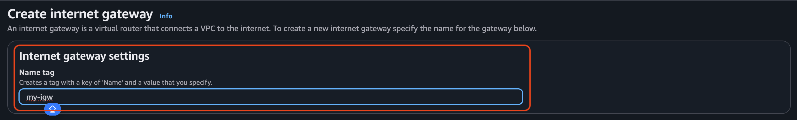
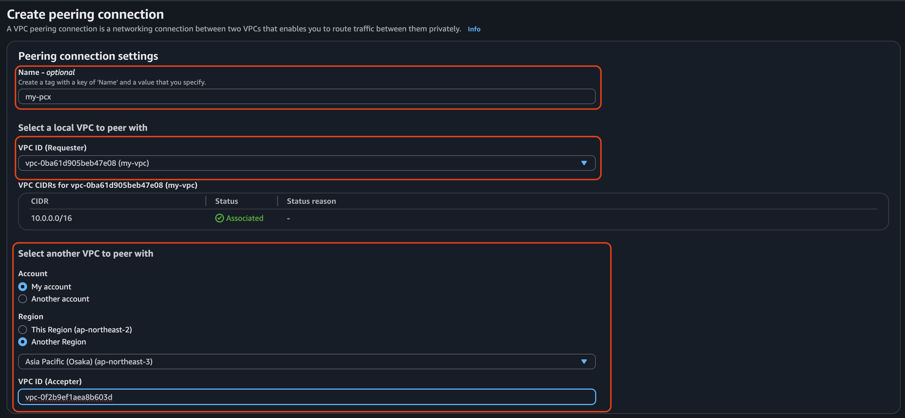

Sun, Aug 24, 2025
VPC Peering allows two VPCs to communicate with each other. Since VPCs can be placed in different regions for security, I will demonstrate connecting two VPCs across regions.

Then, create an EC2 instance in each region, each running a web server. For one of the instances, select the VPC that we created earlier.
For example)
10.0.6.38172.31.39.92They can't communicate with each other. Now, I will configure Peering Connections.


Choose another VPC to peer with, and then go to Peering Connections in the region where you made the request and accept it.
Configure the range of private IPv4 addresses to be used in another region.
Now, the two servers in different regions can communicate with each other.
VPC Peering is a powerful way to connect isolated networks without going through the public internet. If your infrastructure spans multiple VPCs or regions, peering provides a secure and low-latency option for communication.